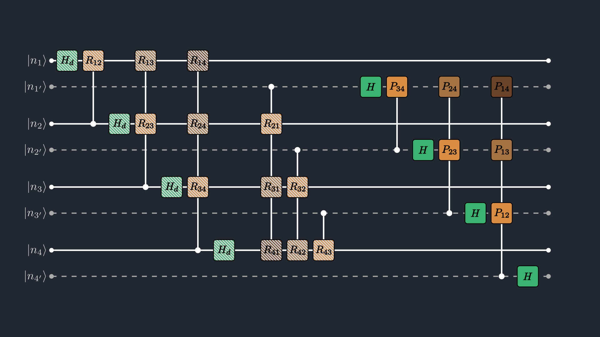
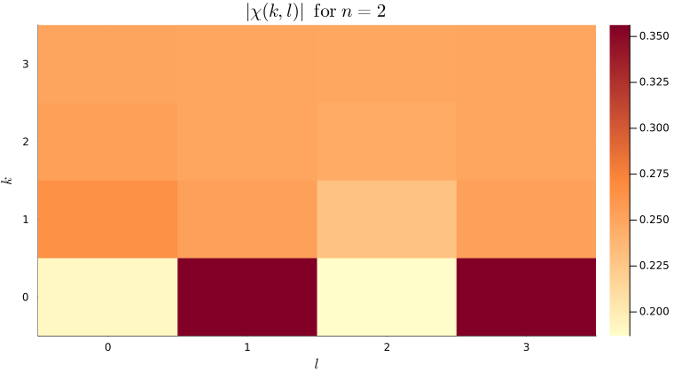
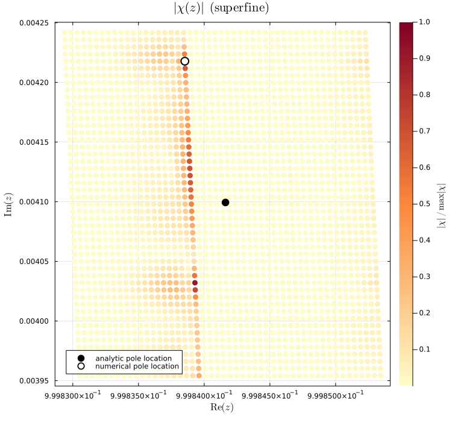

Discrete Laplace (z-)Transform Tutorial
This walkthrough shows how to use QILaplace.jl to compute the discrete z-transform and infer poles of a signal from transformed coefficients.
The zT in this package is a composition of the damping block and QFT block in the paired register basis,
\[W_{\mathrm{zT}} = W_{\mathrm{DT}}(\omega_r)\circ W_{\mathrm{QFT,paired}}.\]
We first run a tiny pedagogical case of a signal with n=2 qubits (N=2^n=4 points). In the paired-register basis, this has m=4 total qubits (M=N^2=16 points).
using QILaplace, ITensors
using LinearAlgebra, Printf
using Plots, LaTeXStringsSetting up the signal
For the walkthrough, we use the signal of the form
\[x_j = a^j\cos(\omega_0 j),\qquad j=0,1,2,3.\]
n = 2
N = 2^n
m = 2n
a_small = 0.7
ω0_small = π / 3
x = Float64[a_small^j * cos(ω0_small * j) for j in 0:(N - 1)]
@show n N m
round.(x; digits=4)4-element Vector{Float64}:
1.0
0.35
-0.245
-0.343Constructing the ZTMPS
The encoded paired state is
\[|x\rangle_{\mathrm{pair}} = \sum_{j=0}^{N-1}\hat{x}_j\,|j\rangle_{\mathrm{main}}|j\rangle_{\mathrm{copy}}, \qquad \hat{x}=x/\|x\|_2.\]
We need both registers:
mainstores transform-output index information,copycarries the original index information used by controlled non-unitary operations in the zT construction.
ψz = signal_ztmps(x; cutoff=1e-14, maxdim=64)
int_to_bits_lsb(v::Integer, n::Int) = Int.(digits(v; base=2, pad=n))
int_to_bits_msb(v::Integer, n::Int) = reverse(int_to_bits_lsb(v, n))
function interleave_bits(main_bits, copy_bits)
length(main_bits) == length(copy_bits) ||
throw(ArgumentError("main_bits and copy_bits must have the same length"))
bits = Vector{Int}(undef, 2 * length(main_bits))
for i in eachindex(main_bits)
bits[2i - 1] = Int(main_bits[i])
bits[2i] = Int(copy_bits[i])
end
return bits
end
@show int_to_bits_msb(0, n)
@show int_to_bits_lsb(3, n)
@show interleave_bits([0, 0], [1, 1]);int_to_bits_msb(0, n) = [0, 0]
int_to_bits_lsb(3, n) = [1, 1]
interleave_bits([0, 0], [1, 1]) = [0, 1, 0, 1]
Element-access sanity check: We can check that the element-access works by checking the amplitude of the coefficient for the state $|2\rangle_{\mathrm{main}}|2\rangle_{\mathrm{copy}}$.
j_demo = 2
bits_j = int_to_bits_msb(j_demo, n)
amp_match = coefficient(ψz, interleave_bits(bits_j, bits_j))
@show amp_match x[j_demo + 1];amp_match = -0.24499999999999986
x[j_demo + 1] = -0.24499999999999986
Constructing the zT circuit
The sampled transform coefficients are:
\[\chi_{k,l} = \frac{1}{2^n}\sum_{j=0}^{N-1}x_j\, e^{-\frac{\omega_r k}{2^n}j}\,e^{-i\frac{\omega_i l}{2^n}j}, \quad s_{k,l}=\frac{\omega_r k+i\omega_i l}{2^n}, \quad z_{k,l}=e^{-s_{k,l}}.\]
The imaginary part of $s_{k,l}$, $\omega_i l/2^n$ makes the $\chi_{k,l}$ run from 0 to $2\pi$ for $\omega_i = 2\pi$, sweeping across all the points angularly. The real part $\omega_r k/2^n$ makes the $\chi_{k,l}$ run from 1 to $e^{-\omega_r}$, sweeping from the $r=1$ to $r=e^{-\omega_r}$ circle radially inwards. The points at the $r=1$ circle correspond to pure oscillations, while the points inside the circle $r < 1$ correspond to damped signals with/without oscillations.] Note that if we want to sample from the origin, we need $\omega_r \rightarrow \infty$, meaning the signal is highly highly damped.
The DT block contributes damping, and paired QFT contributes phase.
Primitive gates to construct the zT circuit in the quantics representation of $j, k, l$ include:
\[H_d = \frac{1}{\sqrt{2}} \begin{pmatrix} 1 & 1 \\ 1 & e^{-\omega_r/2} \end{pmatrix}, \qquad H = \frac{1}{\sqrt{2}} \begin{pmatrix} 1 & 1 \\ 1 & -1 \end{pmatrix},\]
\[R_{lm} = \begin{pmatrix} 1 & 0 \\ 0 & e^{-\omega_r / 2^{m-l+1}} \end{pmatrix}, \qquad P_{lm} = \begin{pmatrix} 1 & 0 \\ 0 & e^{-2\pi i / 2^{m-l+1}} \end{pmatrix}.\]
For controlled gates, we describe action in words: when control is |0⟩ the target is unchanged; when control is |1⟩ the target receives the corresponding damping/phase factor.

We use the -i phase convention in zT/QFT blocks, so $z_{k,l}=r_k e^{-i\theta_l}$ and $\mathrm{Im}(z_{k,l})=-r_k\sin\theta_l$.
ωr = 2π
ωi = 2π
Wzt = build_zt_mpo(ψz, ωr; cutoff=1e-14, maxdim=64)PairedSiteMPO with 2 sites:
Site 1 (main): dim=2, tags="Link,u" | dim=2, tags="site-1" | dim=2, tags="site-1"
Site 1 (copy): dim=8, tags="Link,u" | dim=2, tags="site-copy-1" | dim=2, tags="site-copy-1" | dim=2, tags="Link,u"
Site 2 (main): dim=2, tags="Link,u" | dim=2, tags="site-2" | dim=2, tags="site-2" | dim=8, tags="Link,u"
Site 2 (copy): dim=2, tags="site-copy-2" | dim=2, tags="site-copy-2" | dim=2, tags="Link,u"
Coefficient extraction from transformed ZTMPS: encode (k,l) in LSB-first order (bit-reversal), interleave main/copy bits, query coefficient.
function chi_from_zt(ψ::ZTMPS, k::Int, l::Int)
nreg = length(ψ.sites_main)
kb = int_to_bits_lsb(k, nreg)
lb = int_to_bits_lsb(l, nreg)
return coefficient(ψ, interleave_bits(kb, lb))
endchi_from_zt (generic function with 1 method)Performing the z-Transform
Apply the zT MPO and extract all N x N = 4 x 4 = 16 coefficients.
ψout = apply(Wzt, ψz)
χ_num = ComplexF64[chi_from_zt(ψout, k, l) for k in 0:(N - 1), l in 0:(N - 1)]
@show chi_from_zt(ψout, 1, 1)
round.(χ_num; digits=4)4×4 Matrix{ComplexF64}:
0.1905+0.0im 0.3112-0.1732im 0.187+0.0im 0.3112+0.1732im
0.2648+0.0im 0.2526-0.019im 0.2299+0.0im 0.2526+0.019im
0.2537+0.0im 0.2501-0.0038im 0.2461+0.0im 0.2501+0.0038im
0.2508+0.0im 0.25-0.0008im 0.2492+0.0im 0.25+0.0008imPost-transform coefficient analysis
At each grid index pair (k,l), we use three linked quantities:
s(k, l) = (ωr k + i ωi l)/2^n: the complex Laplace sample point,z(k, l) = e^{-s(k, l)} = e^{-(ωr k + i ωi l)/2^n}: the same point mapped to the complex z-plane,χ(k, l): the sampled z-transform coefficient evaluated at that point.
So (k,l) is the discrete address, s(k,l) is the transform-domain coordinate, z(k,l) is its geometric location in the Argand plane, and χ(k,l) is the value we color/compare on those coordinates.
Analytical reference on the same grid:
function chi_analytical(xn::AbstractVector, k::Int, l::Int, ωr::Real, ωi::Real)
Nloc = length(xn)
s = (ωr * k + im * ωi * l) / Nloc
acc = zero(ComplexF64)
@inbounds for j in 0:(Nloc - 1)
acc += xn[j + 1] * exp(-s * j)
end
return acc / Nloc
end
χ_ref = ComplexF64[chi_analytical(x, k, l, ωr, ωi) for k in 0:(N - 1), l in 0:(N - 1)]
rel_err_small = abs.(χ_num .- χ_ref) ./ max.(abs.(χ_ref), eps(Float64))
@printf("max relative error = %.3e\n", maximum(rel_err_small))
@printf(" %-12s %-20s %-20s %10s\n", "(k,l)", "χ_num", "χ_exact", "rel err")
println("-"^74)
for k in 0:(N - 1), l in 0:(N - 1)
a = χ_num[k + 1, l + 1]
b = χ_ref[k + 1, l + 1]
anum = @sprintf("% .5f%+.5fi", real(a), imag(a))
aexact = @sprintf("% .5f%+.5fi", real(b), imag(b))
@printf(
" (%2d,%2d) %-20s %-20s %8.2e\n",
k, l, anum, aexact, rel_err_small[k + 1, l + 1]
)
end
function z_from_kl(k::Int, l::Int, nreg::Int, ωr::Real, ωi::Real)
Nloc = 2^nreg
r = exp(-ωr * k / Nloc)
θ = ωi * l / Nloc
return complex(r * cos(θ), -r * sin(θ))
end
zs_small = ComplexF64[z_from_kl(k, l, n, ωr, ωi) for k in 0:(N - 1), l in 0:(N - 1)]
round.(zs_small; digits=4)
max relative error = 2.928e-15
(k,l) χ_num χ_exact rel err
--------------------------------------------------------------------------
( 0, 0) 0.19050+0.00000i 0.19050+0.00000i 2.23e-15
( 0, 1) 0.31125-0.17325i 0.31125-0.17325i 2.93e-15
( 0, 2) 0.18700+0.00000i 0.18700+0.00000i 2.48e-15
( 0, 3) 0.31125+0.17325i 0.31125+0.17325i 1.22e-15
( 1, 0) 0.26477+0.00000i 0.26477+0.00000i 1.09e-15
( 1, 1) 0.25265-0.01896i 0.25265-0.01896i 1.17e-15
( 1, 2) 0.22993+0.00000i 0.22993-0.00000i 8.43e-16
( 1, 3) 0.25265+0.01896i 0.25265+0.01896i 3.97e-16
( 2, 0) 0.25366+0.00000i 0.25366+0.00000i 1.58e-15
( 2, 1) 0.25011-0.00379i 0.25011-0.00379i 8.88e-16
( 2, 2) 0.24611+0.00000i 0.24611-0.00000i 1.28e-15
( 2, 3) 0.25011+0.00379i 0.25011+0.00379i 4.57e-16
( 3, 0) 0.25078+0.00000i 0.25078+0.00000i 1.14e-15
( 3, 1) 0.25000-0.00079i 0.25000-0.00079i 4.99e-16
( 3, 2) 0.24921+0.00000i 0.24921-0.00000i 6.50e-16
( 3, 3) 0.25000+0.00079i 0.25000+0.00079i 9.26e-16

Pole Identification from the transform
One of the main applications of performing the z-transform is to identify the zeros and poles of a signal. Suppose we are given a black box that transforms our input signal in a non-unitary manner (that includes decaying of the signal). By identifying where the poles lie in the z-plane, one can get a good understanding of the nature of the response of the black box. This is especially useful in the context of system identification and control in engineering systems. The plot in the previous section may have been too pixelated to reveal detailed features. Although we observed signs of poles at $(k,l)=(0,1), (0,3)$, a higher-resolution transform is required for more precise identification. We now extend the algorithm to a much larger-scale signal to better demonstrate its capability for pole identification. The signal we analyze here is complex-valued and has two poles, one positive and one negative:
\[x_j = a^j\cos(\omega_0 j),\qquad a = 1.00015\,e^{i\,0.002},\quad \omega_0 = 0.0061.\]
We deliberately took a complex-valued amplitude to break the symmetry of the two poles this function has about the real axis. The pole targets are analytically given in the continuum limit as:
\[z_\pm = \frac{1}{a}e^{\pm i\omega_0} \approx 0.99984 + 0.00408i,\ \ 0.99981 - 0.00816i.\]
We shall now perform a signal sampling of $n=20$ qubits ($N=2^{20}=1048576$ points), and compress it into a signal with $m=2n=40$ qubits ($M=N^2 \approx 10^12$ points).
n_big = 20
N_big = 2^n_big
a_big = 1.00015 * exp(im * 0.002)
ω0_big = 0.0061
x_big = ComplexF64[a_big^j * cos(ω0_big * j) for j in 0:(N_big - 1)]
ψz_big = signal_ztmps(
x_big;
method=:rsvd, k=50, p=5, q=2,
cutoff=1e-12, maxdim=128,
)ZTMPS with 20 sites:
Site 1:
Amain: dim=2, tags="site-1" | dim=1, tags="bond-copy-1"
Acopy: dim=1, tags="bond-copy-1" | dim=1, tags="bond-1" | dim=2, tags="site-copy-1"
Site 2:
Amain: dim=1, tags="bond-1" | dim=2, tags="site-2" | dim=1, tags="bond-copy-2"
Acopy: dim=1, tags="bond-copy-2" | dim=1, tags="bond-2" | dim=2, tags="site-copy-2"
Site 3:
Amain: dim=1, tags="bond-2" | dim=2, tags="site-3" | dim=1, tags="bond-copy-3"
Acopy: dim=1, tags="bond-copy-3" | dim=1, tags="bond-3" | dim=2, tags="site-copy-3"
Site 4:
Amain: dim=1, tags="bond-3" | dim=2, tags="site-4" | dim=2, tags="bond-copy-4"
Acopy: dim=2, tags="bond-copy-4" | dim=2, tags="bond-4" | dim=2, tags="site-copy-4"
Site 5:
Amain: dim=2, tags="bond-4" | dim=2, tags="site-5" | dim=3, tags="bond-copy-5"
Acopy: dim=3, tags="bond-copy-5" | dim=2, tags="bond-5" | dim=2, tags="site-copy-5"
Site 6:
Amain: dim=2, tags="bond-5" | dim=2, tags="site-6" | dim=4, tags="bond-copy-6"
Acopy: dim=4, tags="bond-copy-6" | dim=2, tags="bond-6" | dim=2, tags="site-copy-6"
Site 7:
Amain: dim=2, tags="bond-6" | dim=2, tags="site-7" | dim=4, tags="bond-copy-7"
Acopy: dim=4, tags="bond-copy-7" | dim=2, tags="bond-7" | dim=2, tags="site-copy-7"
Site 8:
Amain: dim=2, tags="bond-7" | dim=2, tags="site-8" | dim=4, tags="bond-copy-8"
Acopy: dim=4, tags="bond-copy-8" | dim=2, tags="bond-8" | dim=2, tags="site-copy-8"
Site 9:
Amain: dim=2, tags="bond-8" | dim=2, tags="site-9" | dim=4, tags="bond-copy-9"
Acopy: dim=4, tags="bond-copy-9" | dim=2, tags="bond-9" | dim=2, tags="site-copy-9"
Site 10:
Amain: dim=2, tags="bond-9" | dim=2, tags="site-10" | dim=4, tags="bond-copy-10"
Acopy: dim=4, tags="bond-copy-10" | dim=2, tags="bond-10" | dim=2, tags="site-copy-10"
Site 11:
Amain: dim=2, tags="bond-10" | dim=2, tags="site-11" | dim=4, tags="bond-copy-11"
Acopy: dim=4, tags="bond-copy-11" | dim=2, tags="bond-11" | dim=2, tags="site-copy-11"
Site 12:
Amain: dim=2, tags="bond-11" | dim=2, tags="site-12" | dim=4, tags="bond-copy-12"
Acopy: dim=4, tags="bond-copy-12" | dim=2, tags="bond-12" | dim=2, tags="site-copy-12"
Site 13:
Amain: dim=2, tags="bond-12" | dim=2, tags="site-13" | dim=4, tags="bond-copy-13"
Acopy: dim=4, tags="bond-copy-13" | dim=2, tags="bond-13" | dim=2, tags="site-copy-13"
Site 14:
Amain: dim=2, tags="bond-13" | dim=2, tags="site-14" | dim=4, tags="bond-copy-14"
Acopy: dim=4, tags="bond-copy-14" | dim=2, tags="bond-14" | dim=2, tags="site-copy-14"
Site 15:
Amain: dim=2, tags="bond-14" | dim=2, tags="site-15" | dim=4, tags="bond-copy-15"
Acopy: dim=4, tags="bond-copy-15" | dim=2, tags="bond-15" | dim=2, tags="site-copy-15"
Site 16:
Amain: dim=2, tags="bond-15" | dim=2, tags="site-16" | dim=4, tags="bond-copy-16"
Acopy: dim=4, tags="bond-copy-16" | dim=2, tags="bond-16" | dim=2, tags="site-copy-16"
Site 17:
Amain: dim=2, tags="bond-16" | dim=2, tags="site-17" | dim=4, tags="bond-copy-17"
Acopy: dim=4, tags="bond-copy-17" | dim=2, tags="bond-17" | dim=2, tags="site-copy-17"
Site 18:
Amain: dim=2, tags="bond-17" | dim=2, tags="site-18" | dim=4, tags="bond-copy-18"
Acopy: dim=4, tags="bond-copy-18" | dim=2, tags="bond-18" | dim=2, tags="site-copy-18"
Site 19:
Amain: dim=2, tags="bond-18" | dim=2, tags="site-19" | dim=4, tags="bond-copy-19"
Acopy: dim=4, tags="bond-copy-19" | dim=2, tags="bond-19" | dim=2, tags="site-copy-19"
Site 20:
Amain: dim=2, tags="bond-19" | dim=2, tags="site-20" | dim=2, tags="bond-copy-20"
Acopy: dim=2, tags="bond-copy-20" | dim=2, tags="site-copy-20"
The closed-form solution for the given signal is given as
\[χ(z) = \frac{1}{2N}\left(\frac{1 - (γ_p z)^N}{1 - γ_p z} + \frac{1 - (γ_m z)^N}{1 - γ_m z}\right),\]
where $γ_p = a e^{iω_0}$ and $γ_m = a e^{-iω_0}$. Note that this closed form does not have a defined pole as the analytical case. The poles manifest only at the infinite series limit. However, we will still see signatures of a pole around that analytic point for a large enough signal sampling. We now define that function, and another function to numerically sample the z-transform coefficients from the given MPS.
function χ_finite_reference(z::ComplexF64, γp::ComplexF64, γm::ComplexF64, Nloc::Int)
s1 = (1 - (γp * z)^Nloc) / (1 - γp * z)
s2 = (1 - (γm * z)^Nloc) / (1 - γm * z)
return (0.5 / Nloc) * (s1 + s2)
end
function sample_chi_and_z(ψ::ZTMPS, nreg::Int, ωr::Real, ωi::Real, ks, ls)
χ = ComplexF64[chi_from_zt(ψ, k, l) for k in ks, l in ls]
zs = ComplexF64[z_from_kl(k, l, nreg, ωr, ωi) for k in ks, l in ls]
return χ, zs
end
z_pole_pos = (1 / a_big) * exp( im * ω0_big)
z_pole_neg = (1 / a_big) * exp(-im * ω0_big)
@show z_pole_pos z_pole_neg;
γ_pos = a_big * exp( im * ω0_big);
γ_neg = a_big * exp(-im * ω0_big);z_pole_pos = 0.9998416187689586 + 0.004099373607135251im
z_pole_neg = 0.9998172225959715 - 0.00809869662229722im
Coarse-grained scan
In this coarse-grain scan, we obtain the z-transform values at the values of $k, l$ that are far apart from each other. This will let us sparsely sample over the 2D $z$-plane. We take the sampling step to be $2^{12}$ which gives us a a total of $2^8 \times 2^8 = 2^{16}$ points in the grid.
ωr_coarse = 2π
ωi_coarse = 2π
step_coarse = 2^12
Wzt_coarse = build_zt_mpo(ψz_big, ωr_coarse; cutoff=1e-12, maxdim=128)
ψout_coarse = apply(Wzt_coarse, ψz_big)
ks_coarse = 0:step_coarse:(N_big - 1)
ls_coarse = 0:step_coarse:(N_big - 1)
χ_coarse, zs_coarse = sample_chi_and_z(ψout_coarse, n_big, ωr_coarse, ωi_coarse, ks_coarse, ls_coarse)
mag_coarse = abs.(χ_coarse)
mag_coarse_norm = mag_coarse ./ maximum(mag_coarse)
peak_idx_c = argmax(mag_coarse)
k_peak_c = ks_coarse[peak_idx_c[1]]
l_peak_c = ls_coarse[peak_idx_c[2]]
z_peak_c = z_from_kl(k_peak_c, l_peak_c, n_big, ωr_coarse, ωi_coarse)
@printf(" Predicted pole indices from coarse scan: %d, %d\n", k_peak_c, l_peak_c)
@printf(" Predicted pole location from coarse scan: %.6f + %.6fi\n", real(z_peak_c), imag(z_peak_c))
@printf(" Error from nearest analytic pole: %.3e\n", min(abs(z_peak_c - z_pole_pos), abs(z_peak_c - z_pole_neg)))
Predicted pole indices from coarse scan: 0, 0
Predicted pole location from coarse scan: 1.000000 + -0.000000i
Error from nearest analytic pole: 4.102e-03

Fine-grained scan
In the fine-grained scan, we consider the place near the unit circle, around the real axis where we found the signatures of poles from the coarse scan. To get the resolution better, we generate the zT-MPO for ωr_fine = 0.5 so that we can sample more densely near the unit circle. We sample $128 \times 128$ points around the area $r \in [0.99984, 1]$ and $\theta \in [-5e-3, 9e-3]$.
ωr_fine = 0.5
ωi_fine = 2π
nr_fine = 128
nθ_fine = 128
rmin_fine, rmax_fine = 1 - 1.6e-4, 1.0
θmin_fine, θmax_fine = -5e-3, 9e-3
Wzt_fine = build_zt_mpo(ψz_big, ωr_fine; cutoff=1e-12, maxdim=128)
ψout_fine = apply(Wzt_fine, ψz_big)
r_targets = range(rmin_fine, rmax_fine; length=nr_fine)
ks_fine = clamp.(round.(Int, (-N_big / ωr_fine) .* log.(r_targets)), 0, N_big - 1)
θ_targets = range(θmin_fine, θmax_fine; length=nθ_fine)
θ_wrapped = mod.(θ_targets, 2π)
ls_fine = mod.(round.(Int, (N_big / ωi_fine) .* θ_wrapped), N_big)
χ_fine, zs_fine = sample_chi_and_z(ψout_fine, n_big, ωr_fine, ωi_fine, ks_fine, ls_fine)
mag_fine = abs.(χ_fine)
mag_fine_norm = mag_fine ./ maximum(mag_fine)
peak_idx_f = argmax(mag_fine)
k_peak_f = ks_fine[peak_idx_f[1]]
l_peak_f = ls_fine[peak_idx_f[2]]
z_peak_f = z_from_kl(k_peak_f, l_peak_f, n_big, ωr_fine, ωi_fine)
@printf(" Predicted pole indices from fine scan: %d, %d\n", k_peak_f, l_peak_f)
@printf(" Predicted pole location from fine scan: %.6f + %.6fi\n", real(z_peak_f), imag(z_peak_f))
@printf(" Error from nearest analytic pole: %.3e\n", min(abs(z_peak_f - z_pole_pos), abs(z_peak_f - z_pole_neg)))
Predicted pole indices from fine scan: 0, 1047889
Predicted pole location from fine scan: 0.999992 + 0.004117i
Error from nearest analytic pole: 1.509e-04

Superfine (full-resolution zoom)
We have certainly increased in accuracy of the pole's location as we increased the resolution of the scan from coarse to fine. To zoom into the poles fully, we need to sample the z-transform at the full (k,l) stride 1:1 around one analytical pole. In this run, we sample around the positive pole we obtained from the fine scan. We will do a $50 \times 50$ grid sampling around this pole.
z_target = z_pole_pos # analytical positive pole for stable superfine centering
θ_target = mod(-angle(z_target), 2π)
k_center = clamp(round(Int, (-N_big / ωr_fine) * log(abs(z_target))), 0, N_big - 1)
l_center = mod(round(Int, (N_big / ωi_fine) * θ_target), N_big)
half_k = 24
half_l = 24
ks_superfine = collect((k_center - half_k):(k_center + half_k))
ls_superfine = mod.(collect((l_center - half_l):(l_center + half_l)), N_big)
χ_super, zs_superfine = sample_chi_and_z(ψout_fine, n_big, ωr_fine, ωi_fine, ks_superfine, ls_superfine)
mag_super = abs.(χ_super)
mag_super_norm = mag_super ./ maximum(mag_super)
peak_idx_s = argmax(mag_super)
k_peak_s = ks_superfine[peak_idx_s[1]]
l_peak_s = ls_superfine[peak_idx_s[2]]
z_peak_s = z_from_kl(k_peak_s, l_peak_s, n_big, ωr_fine, ωi_fine)
@printf(" Predicted pole indices from superfine scan: %d, %d\n", k_peak_s, l_peak_s)
@printf(" Predicted pole location from superfine scan: %.6f + %.6fi\n", real(z_peak_s), imag(z_peak_s))
@printf(" Error from nearest analytic pole: %.3e\n", min(abs(z_peak_s - z_pole_pos), abs(z_peak_s - z_pole_neg)))
Predicted pole indices from superfine scan: 320, 1047872
Predicted pole location from superfine scan: 0.999839 + 0.004218i
Error from nearest analytic pole: 1.185e-04

Figure 2. Pole identification from transformed coefficients: coarse global scan, fine near-unit-circle scan, and superfine z-plane local full-resolution scan with analytical pole marker.
The detected peak is still not exactly on the analytical pole location, and that is expected here. The reason is not a failure of the algorithm, but the fact that we are computing a finite, discretized Laplace/z-transform from a sampled signal, whereas the analytical pole formula comes from the ideal infinite-series model. In other words, the method is correctly capturing the pole signature, but finite sampling and grid resolution leave a small offset in the recovered pole position; with a longer and more finely time-resolved signal, that offset should shrink and the detected pole should move closer to the analytical value.
This page was generated using Literate.jl.